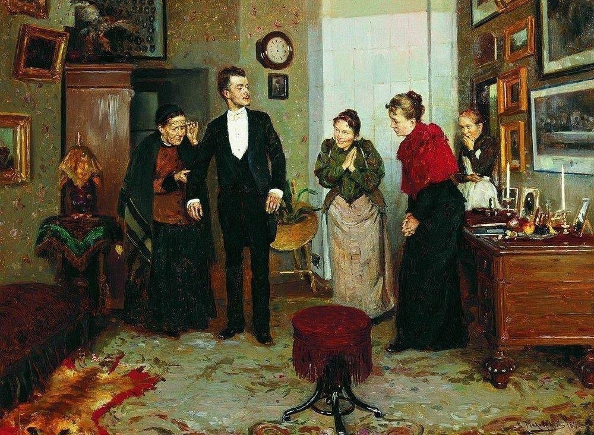

"Подросток" — роман Ф.М. Достоевского, написанный в 1875 году. Это произведение, в котором автор исследует внутренний мир молодого человека, его поиски смысла жизни и место в обществе. Главный герой — 16-летний Аркадий Долгорукий, который возвращается в Россию после долгого проживания за границей и сталкивается с множеством социальных и моральных вопросов.
Роман начинается с того, что Аркадий, сын богатого помещика, возвращается в родное имение после учебы за границей. Он полон амбиций и стремлений, хочет понять свою роль в мире и найти свое место в обществе. Аркадий обладает сложным характером: он одновременно наивен и умён, мечтателен и реалистичен. Его внутренние противоречия становятся основой сюжета. В процессе развития событий Аркадий знакомится с разными людьми, которые влияют на его мировосприятие. Среди них — его отец, помещик Долгорукий, который представляет собой образец старого русского дворянства, а также различные представители нового общества, такие как либералы и социалисты. Каждый из этих персонажей олицетворяет разные идеологии и взгляды на жизнь. Аркадий начинает активно участвовать в общественной жизни, стремясь понять, что такое «правда» и «справедливость». Он сталкивается с разными взглядами на жизнь, включая идеи о свободе, власти и ответственности. В его окружении — такие персонажи, как княгиня Мэри, которая представляет собой образец женской мудрости и доброты, и Лебедев, который символизирует экономический прагматизм и цинизм. Одним из ключевых моментов романа становится встреча Аркадия с загадочным и харизматичным человеком — Станиславом Тихоновичем. Этот персонаж становится для него своеобразным наставником, открывающим новые горизонты мышления. Однако Тихонович также демонстрирует темные стороны человеческой природы, что вызывает у Аркадия внутренние терзания. В ходе сюжета Аркадий сталкивается с проблемами любви и предательства. Его романтические чувства к княгине Мэри осложняются вмешательством других персонажей и его собственными сомнениями. Он испытывает страх перед взрослением и ответственностью, что приводит к конфликтам как с окружающими, так и с самим собой. Кульминацией романа становится момент осознания Аркадия своего места в мире. Он понимает, что идеалы юности не всегда совпадают с реальностью жизни. В конце концов, Аркадий принимает решение о том, что он хочет быть не просто наблюдателем, но активным участником жизни.
Поиск идентичности: Артемий — 17-летний юноша, который стремится понять себя и свое место в обществе. Он погружен в размышления о жизни, морали и человеческих отношениях, что делает его типичным представителем "переходного возраста".
Идеалист и реалист: Несмотря на свои идеалистические взгляды, Артемий часто сталкивается с жестокой реальностью, которая заставляет его пересматривать свои убеждения. Он пытается найти баланс между высокими идеалами и суровой действительностью.
Трагичный конфликт: Он испытывает внутренний конфликт между своей стремящейся к свободе натурой и ожиданиями окружающих. Это приводит его к ведению глубоких философских раздумий о жизни и человеческой природе.
Наследие и влияние: Артемий столкнулся с влиянием различных фигур в своей жизни, включая отца и мать, чьи мнения и действия формируют его взгляды на мир. Он ищет модель поведения и идеалы, но обнаруживает их противоречивость.
Патерналист и опекун: Протасов — пожилой помещик, который беременно опекает Артемия, выступая в роли наставника. Он обладает определенной мудростью и жизненным опытом, но похож на морального компаса для молодого героя.
Обладание противоречий: Несмотря на свою доброжелательность, он имеет свои недостатки и внутренние конфликты, что делает его сложным персонажем. Протасов часто капризен и может проявлять эгоизм, что создает напряжение в его отношениях с Артемием.
Сложный моральный выбор: Он находится в постоянном поиске своего места в обществе и стремится оставаться в гармонии с окружающими, но его идеалы иногда противоречат реальной жизни.
Роль матери: Нина — мать Артемия, играющая важную роль в его внутреннем мире. Ее влияние на сына является одновременно положительным и отрицательным.
Образ женщины-жертвы: Она представляет собой образ женщины, жертву, которая постоянно находится в зависимости от мужских фигур. Нина стремится защитить сына, но ее слабости и неуверенность также отражаются на Артемии.
Мотивация и забота: Ее любовь к Артемию полна противоречий, так как она пытается дать ему все лучшее, но сама часто оказывается слабой и зависимой.
Объект стремлений: Зинаида — молодая женщина, на которую Артемий обращает внимание. Она символизирует его стремление к любви, пониманию и принятию.
Идеализированный образ: Для Артемия Зинаида становится идеалом, в который он проецирует свои мечты и фантазии. Однако ее собственные переживания и судьба его идеализированное восприятие.
Сложность человеческих отношений: Ее характер и поведение показывают, что романтические идеалы часто сталкиваются с реальной жизнью, вводя в жизнь Артемия недоумение и разочарование.
Антигерой: Григорий выступает в романе как контраст к Артемию, его квалифицируя как негативный пример. Он представляет собой тот тип личности, который использует манипуляции и хитрость, чтобы добиться своих целей.
Конфликт между чувствами и долгом: Аглая находится в постоянном конфликте между своими чувствами к Мышкину и ожиданиями общества. Она стремится к независимости, но также хочет быть любимой.
Влияние на рост Артемия: Его действия и ненадежные качественные характеристики помогают Артемию понять сложности человеческой природы, что способствует его взрослению и формированию идеи о добре и зле.
